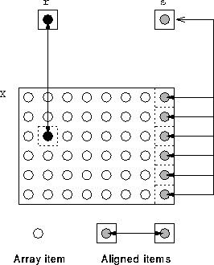

Next: Explicit Replication Using Templates
Up: Data Distribution
Previous: Aligning to a Template
HPF does not forbid mapping scalars [yet]:
REAL, DIMENSION(6,8) :: X
REAL r, s
!HPF$ ALIGN r WITH X(3,2)
!HPF$ ALIGN s WITH X(*,8)

For more information, click here

Next: Explicit Replication Using Templates
Up: Data Distribution
Previous: Aligning to a Template
Adam Marshall ©University of Liverpool, 1996
Tue Nov 26 19:51:50 GMT 1996